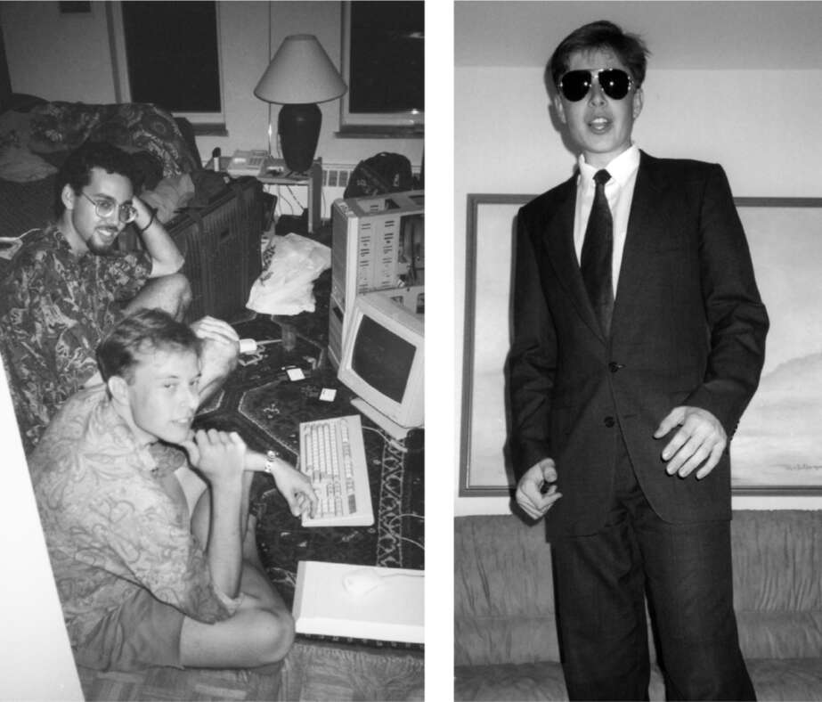

Quan hệ lao động
Điểm thi tuyển sinh đại học của Musk không đặc biệt nổi bật. Trong lần thi SAT thứ hai, anh đạt 670/800 điểm bài thi Ngữ văn và 730 điểm Toán. Anh thu hẹp lựa chọn của mình xuống còn hai trường đại học dễ dàng lái xe từ Toronto: Waterloo và Queen’s. "Waterloo chắc chắn tốt hơn cho ngành kỹ thuật, nhưng dường như không tuyệt vời về mặt xã hội," anh nói. "Có rất ít nữ sinh ở đó." Anh cảm thấy mình hiểu biết về khoa học máy tính và kỹ thuật cũng như bất kỳ giáo sư nào ở cả hai nơi, nhưng anh khao khát có một cuộc sống xã hội. "Tôi không muốn dành thời gian đại học của mình với một nhóm đàn ông." Vì vậy, vào mùa thu năm 1990, anh đăng ký học tại Queen’s.
Anh được sắp xếp ở tầng quốc tế của một ký túc xá, và ngay ngày đầu tiên, anh đã gặp Navaid Farooq, người bạn thực sự đầu tiên và lâu dài bên ngoài gia đình. Cha của Farooq là người Pakistan, mẹ là người Canada, và anh lớn lên ở Nigeria và Thụy Sĩ, nơi cha mẹ anh làm việc cho các tổ chức Liên Hợp Quốc. Giống như Elon, anh cũng không có bạn thân nào thời trung học. Tại Queen’s, anh và Musk nhanh chóng thân thiết nhờ có chung sở thích về máy tính, trò chơi trên bàn cờ, lịch sử ít người biết và khoa học viễn tưởng. "Đối với tôi và Elon," Farooq chia sẻ, "đó có lẽ là nơi đầu tiên chúng tôi được chấp nhận về mặt xã hội và có thể là chính mình."
Năm nhất, Musk đạt điểm A các môn Kinh doanh, Kinh tế, Giải tích và Lập trình máy tính, nhưng chỉ đạt điểm B các môn Kế toán, Tiếng Tây Ban Nha và Quan hệ Lao động. Năm sau, anh học lại môn Quan hệ Lao động, môn học nghiên cứu về mối quan hệ giữa người lao động và ban quản lý. Một lần nữa, anh lại đạt điểm B. Sau này, anh chia sẻ với tạp chí cựu sinh viên Queen’s rằng điều quan trọng nhất anh học được trong hai năm ở đó là "cách làm việc nhóm hiệu quả với những người thông minh và sử dụng phương pháp Socrates để đạt được mục tiêu chung", một kỹ năng, giống như kỹ năng về quan hệ lao động, mà các đồng nghiệp tương lai sẽ nhận thấy là anh chỉ mới tôi luyện được một phần.
Anh quan tâm nhiều hơn đến những cuộc thảo luận triết học về ý nghĩa cuộc sống vào đêm khuya. "Tôi thực sự khao khát điều đó," anh nói, "vì trước đó tôi không có người bạn nào để trò chuyện về những điều này." Nhưng trên tất cả, anh cùng Farooq đắm chìm vào thế giới của trò chơi trên bàn cờ và máy tính.
"Cậu đang làm điều phi lý đấy," Musk giải thích bằng giọng đều đều. "Cậu đang tự hại mình." Anh và Farooq đang chơi trò chơi chiến lược Diplomacy với bạn bè trong ký túc xá, và một trong số những người chơi đang liên minh với người khác để chống lại Musk. "Nếu cậu làm vậy, tôi sẽ khiến đồng minh của cậu quay lưng lại với cậu và cậu sẽ phải trả giá." Farooq cho biết, Musk thường thắng nhờ khả năng thuyết phục trong đàm phán và đe dọa.
Musk đã thích tất cả các loại trò chơi điện tử khi còn là một thiếu niên ở Nam Phi, bao gồm cả game bắn súng góc nhìn thứ nhất và game phiêu lưu, nhưng ở đại học, anh tập trung hơn vào thể loại được gọi là trò chơi chiến lược, loại trò chơi mà hai hoặc nhiều người chơi cạnh tranh để xây dựng một đế chế bằng chiến lược cấp cao, quản lý tài nguyên, hậu cần chuỗi cung ứng và tư duy chiến thuật.
Các trò chơi chiến lược - cả trên bàn cờ và trên máy tính - đã trở thành trọng tâm trong cuộc đời Musk. Từ trò The Ancient Art of War mà anh chơi khi còn niên thiếu ở Nam Phi, cho đến việc nghiện trò The Battle of Polytopia ba thập kỷ sau đó, anh say mê việc lập kế hoạch phức tạp và quản lý cạnh tranh tài nguyên cần thiết để giành chiến thắng. Việc đắm mình trong những trò chơi này hàng giờ liền đã trở thành cách anh thư giãn, thoát khỏi căng thẳng và trau dồi kỹ năng chiến thuật cũng như tư duy chiến lược cho công việc kinh doanh.
Thời sinh viên tại Queen’s, trò chơi chiến lược vi tính đầu tiên ra đời: Civilization. Trong trò chơi, người chơi cạnh tranh xây dựng một xã hội từ thời tiền sử đến hiện đại bằng cách lựa chọn công nghệ để phát triển và cơ sở sản xuất để xây dựng. Musk đã chuyển bàn làm việc để có thể ngồi trên giường, còn Farooq ngồi trên ghế để cùng nhau chơi. “Chúng tôi hoàn toàn đắm chìm hàng giờ liền cho đến khi kiệt sức”, Farooq kể. Họ chuyển sang Warcraft: Orcs and Humans, một trò chơi mà chiến lược cốt lõi là phát triển nguồn cung cấp tài nguyên bền vững, chẳng hạn như kim loại từ mỏ. Sau nhiều giờ chơi, họ sẽ nghỉ ăn, và Elon sẽ mô tả khoảnh khắc trong trò chơi khi anh biết mình sẽ thắng. “Tôi sinh ra để chiến đấu”, anh nói với Farooq.
Một lớp học tại Queen’s đã sử dụng một trò chơi chiến lược, trong đó các đội thi đấu mô phỏng việc phát triển kinh doanh. Người chơi có thể quyết định giá sản phẩm, số tiền chi cho quảng cáo, lợi nhuận tái đầu tư vào nghiên cứu và các biến số khác. Musk đã tìm ra cách đảo ngược logic điều khiển trò chơi mô phỏng, vì vậy anh luôn chiến thắng.
Khi Kimbal chuyển đến Canada và cùng Elon học tại Queen’s, hai anh em đã hình thành một thói quen. Họ sẽ đọc báo và chọn ra người mà họ thấy thú vị nhất. Elon không phải là kiểu người thích thu hút và quyến rũ người hướng dẫn, vì vậy Kimbal, người hòa đồng hơn, đã chủ động gọi điện cho người đó. “Nếu gọi được, họ thường sẽ ăn trưa với chúng tôi”, anh nói.
Một trong những người họ chọn là Peter Nicholson, giám đốc điều hành phụ trách hoạch định chiến lược tại Scotiabank. Nicholson là một kỹ sư với bằng thạc sĩ vật lý và bằng tiến sĩ toán học. Khi Kimbal liên lạc được với ông, ông đã đồng ý ăn trưa với hai anh em. Mẹ của họ đưa họ đi mua sắm tại cửa hàng bách hóa Eaton’s, nơi mua bộ vest $99 sẽ được tặng kèm áo sơ mi và cà vạt. Trong bữa trưa, họ thảo luận về triết học, vật lý và bản chất của vũ trụ. Nicholson đề nghị họ làm việc mùa hè, mời Elon làm việc trực tiếp với ông trong nhóm hoạch định chiến lược ba người của mình.
Nicholson, khi đó bốn mươi chín tuổi, và Elon đã cùng nhau giải các câu đố toán học và các phương trình phức tạp. “Tôi quan tâm đến khía cạnh triết học của vật lý và mối liên hệ của nó với thực tế”, Nicholson nói. “Tôi không có nhiều người để nói chuyện về những điều này.” Họ cũng thảo luận về niềm đam mê của Musk: du hành vũ trụ.
Khi Elon đi dự tiệc với Christie, con gái của Nicholson, câu hỏi đầu tiên của anh là “Cô có bao giờ nghĩ về xe điện không?” Sau này anh thừa nhận, đó không phải là câu mở đầu hay nhất.
Một chủ đề Musk nghiên cứu cho Nicholson là nợ của Mỹ Latinh. Các ngân hàng đã cho các quốc gia như Brazil và Mexico vay hàng tỷ đô la mà không thể trả được, và vào năm 1989, Bộ trưởng Tài chính Hoa Kỳ, Nicholas Brady, đã đóng gói các khoản nợ này thành chứng khoán có thể giao dịch được gọi là “Trái phiếu Brady.” Vì những trái phiếu này được chính phủ Hoa Kỳ bảo lãnh, Musk tin rằng chúng sẽ luôn có giá trị 50 xu trên một đô la. Tuy nhiên, một số đang được bán với giá thấp tới 20 xu.
Musk nghĩ rằng Scotiabank có thể kiếm hàng tỷ đô la bằng cách mua trái phiếu với giá rẻ đó, và anh đã gọi cho bàn giao dịch Goldman Sachs ở New York để đảm bảo rằng họ có sẵn. “Ừ, anh muốn bao nhiêu?” giọng người giao dịch viên cộc cằn vang lên từ đầu dây bên kia. “Liệu có thể mua được năm triệu không?” Musk hỏi, cố làm giọng nói trầm và nghiêm túc. Khi người giao dịch nói rằng điều đó không thành vấn đề, Musk nhanh chóng cúp máy. “Tôi đã nghĩ, ‘Trúng đậm rồi, đây là một vụ làm ăn không thể thua,’ ” anh nói. “Tôi chạy đi báo tin cho Peter và nghĩ rằng họ sẽ cho tôi ít tiền để thực hiện.” Nhưng ngân hàng đã từ chối ý tưởng này. Giám đốc điều hành nói rằng họ đã nắm giữ quá nhiều nợ của Mỹ Latinh. “Chuyện này thật điên rồ,” Musk tự nhủ. “Đây là cách các ngân hàng suy nghĩ sao?”
Nicholson nói rằng Scotiabank đã xử lý tình hình nợ của Mỹ Latinh bằng phương pháp riêng của họ, và phương pháp này hiệu quả hơn. “Anh ấy đã có ấn tượng rằng ngân hàng kém thông minh hơn thực tế rất nhiều,” Nicholson nói. “Nhưng đó lại là điều tốt, vì nó đã cho anh ấy một sự bất kính lành mạnh đối với ngành tài chính và sự táo bạo để cuối cùng bắt đầu thành lập nên PayPal.”
Musk cũng rút ra một bài học khác từ thời gian làm việc tại Scotiabank: anh ấy không thích, cũng không giỏi làm việc cho người khác. Bản chất của anh không phải là người biết điều hay cho rằng người khác có thể biết nhiều hơn mình.

Với Navaid Farooq tại Queen’s và với bộ vest mới của anh ấy